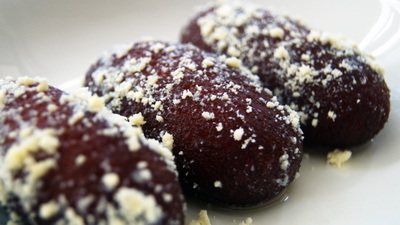

How to make delicious Kalo Jam!

Description:
This traditional Bengali sweet is prepared using flour dumplings that are
deep-fried until dark brown in color and then soaked in slow-simmering
sugar syrup.
Ingredients:
- Powdered Milk: 1 Cup
- All Purpose Flour: 2 Tablespoons
- Semolina: 1 Tablespoon
- Baking Powder: 1 Teaspoon
- Ghee [Clarified Butter]: 1/2 Tablespoon
- Milk: 1/2 Cup
- Red Food Color: 2-3 Drops
- Water: 3 Cups
- Sugar: 2 Cups
- Green Cardamom: 3 pieces
- Vegetable Virgin Oil: As Needed
Cooking Steps:
-
Take a large round bowl, and add Powdered Milk,
All Purpose Flour, Semolina,
Baking Powder, and mix well.
-
After the initial mixing is done, add the Ghee and mix
well again.
-
Slowly add the Milk, one tablespoon at a time, and mix
well each time. Wait a few seconds before adding the next spoon of milk
while continuously mixing the whole time.
-
Add the Food Color, and continue mixing until the
mixture becomes really sticky.
-
Use some Ghee on your hands, spreading it nicely. Then
carefully take a small portion of the mixture and shape it.
-
First, roll the portion into a ball using your hands, and then slowly
press the palms of your hands together, so that the portion turns into a
sort of cylinder shape.
-
In a separate large pan, heat the Water,
Sugar, and Cardamoms, stirring with a
long teaspoon, until the sugar dissolves. Keep this sugar mixture hot.
-
In a non-stick frying pan, use Vegetable Virgin Oil to
coat the surface, and with a bit more oil, fry the cylinder-shaped sweet
mixtures on low-medium heat.
-
Use a wooden spoon to slowly roll the mixtures so they cook
evenly.
-
Once the sweets turn reddish-black, soak them in the sugar mixture you
made earlier and
leave them in it for at least 6 hours!
- Finally, after waiting long enough, eat and enjoy!
Final Words:
This recipe, holds a special place in my mind as this was the last dish I
made, which my mother had the chance to try, before she passed away in
2022. May Allah bless her soul! I hope you will try this dish and enjoy
the sweetness of Kalo Jams!
Go Back To The Homepage